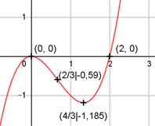

Aufgabe 18 f(x) = x3 - 2x2 f'(x) = 3x2 - 4x, f''(x) = 6x - 4, f'''(x) = 6 Definitionsbereich: -∞ < x < ∞ Wertebereich: -∞ < f(x) < ∞ Asymptoten: - Symmetrie: - Nullstellen: x3 - 2x2 = 0 x2 * (x - 2) = 0 x2 = 0 --> x1,2 = 0 (Berührpunkt, Extrempunkt) x - 2 = 0 |+2 x3 = 2 N1,2(0|0), N3(2|0) Schnittpunkt mit der y-Achse: f(0) = 03 - 2 * 02 = 0 Sy(0|0) Extrempunkte: 3x2 - 4x = 0 x * (3x - 4) = 0 x1 = 0, f(0) = 0 3x - 4 = 0| +4 3x = 4 |:3 4 4 4 4 x2 = ---, f(---) = (---)3 - 2 * (---)2 = -1,185 3 3 3 3 f''(0) = 6 * 0 - 4 = - 4 < 0 --> Hochpunkt (0|0) 4 4 f''(---) = 6 * --- - 4 = 4 > 0 --> 3 3 4 Tiefpunkt (---, -1,185) 3 Wendepunkte: 6x - 4 = 0 | +4 6x = 4 | :6 2 2 2 2 x = ---, f(---) = (---)3- 2 * (---)2 = -0,59 3 3 3 3 2 f''' ≠ 0 --> Wendepunkt (---, -0,59) 3 Graph:
